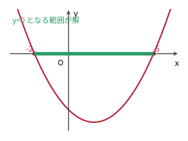

ホーム ＞ 数学I ＞ 2次不等式
2次不等式 \(x^2+ax+b<0\) の解が \(-2<x<5\) であるとき、定数 \(a,\ b\) の値を求めよ。
解が \(-2<x<5\) となる2次不等式は \((x+2)(x-5)<0\)。これを展開して \(x^2+ax+b<0\) と比べる。\(x^2\) の係数が1で同じことを確認して、係数を比較する。
\(x^2\) の係数が1で解が \(-2<x<5\) となるのは

\(x^2+ax+b<0\) と \(x^2-3x-10<0\) を比べて
\(x^2-3x-10<0\) を解くと \((x-5)(x+2)<0\) より \(-2<x<5\)。
【答案（テストに書く形）】
答